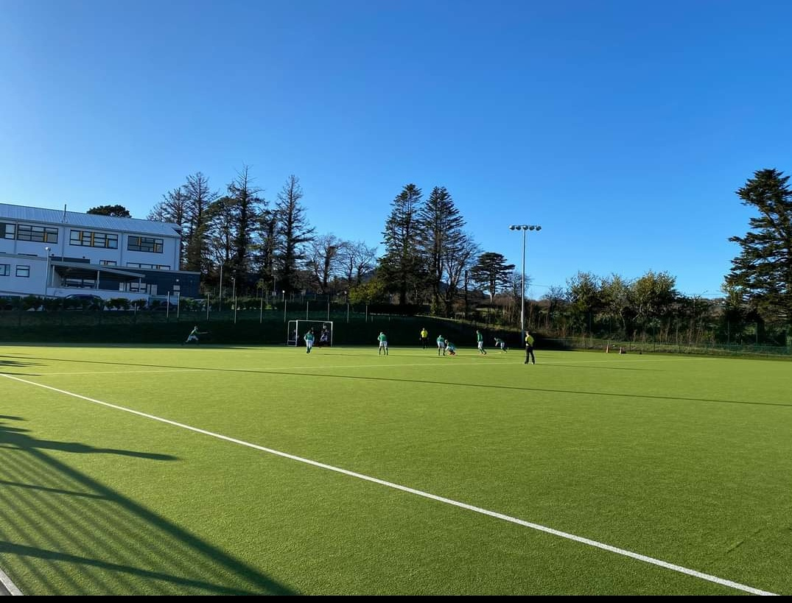
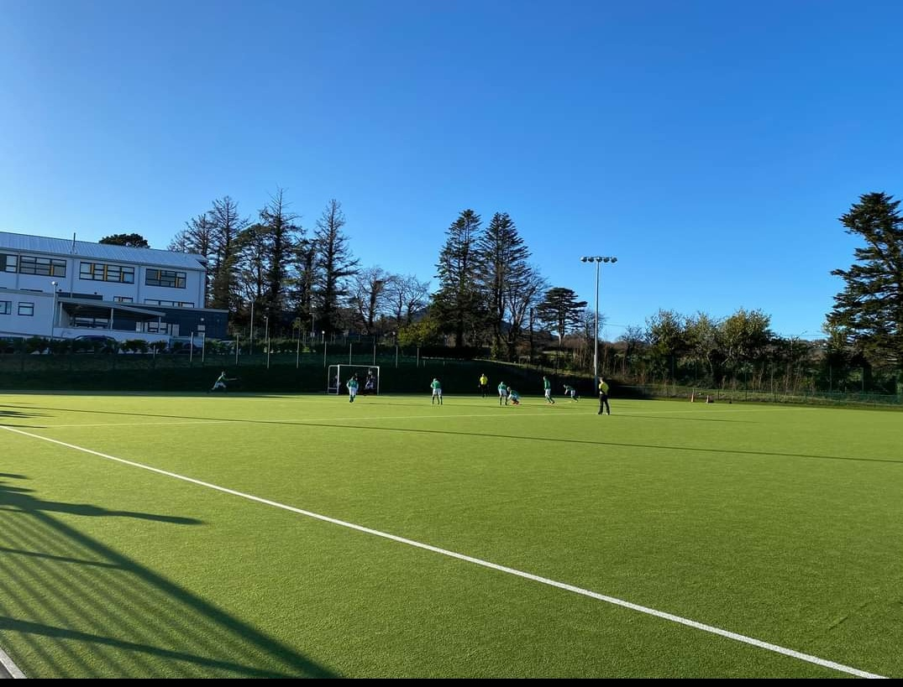
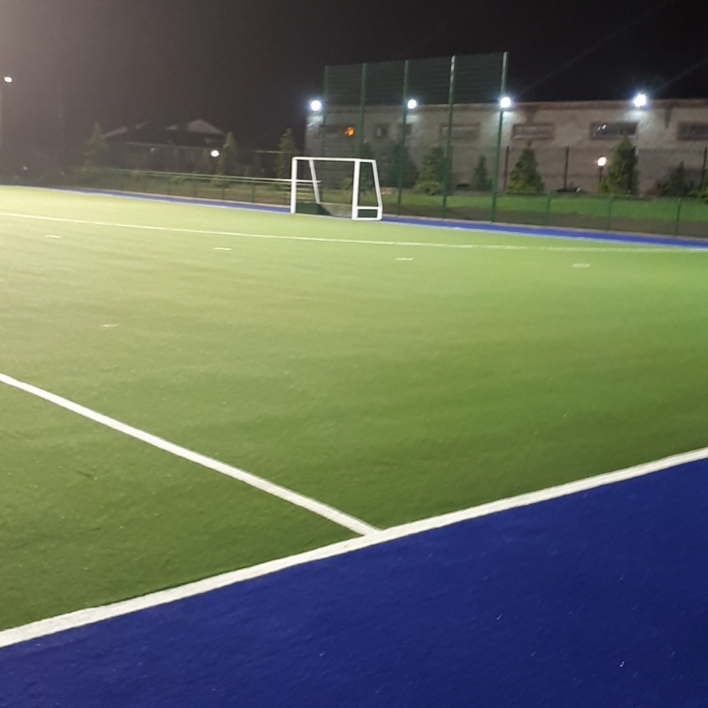
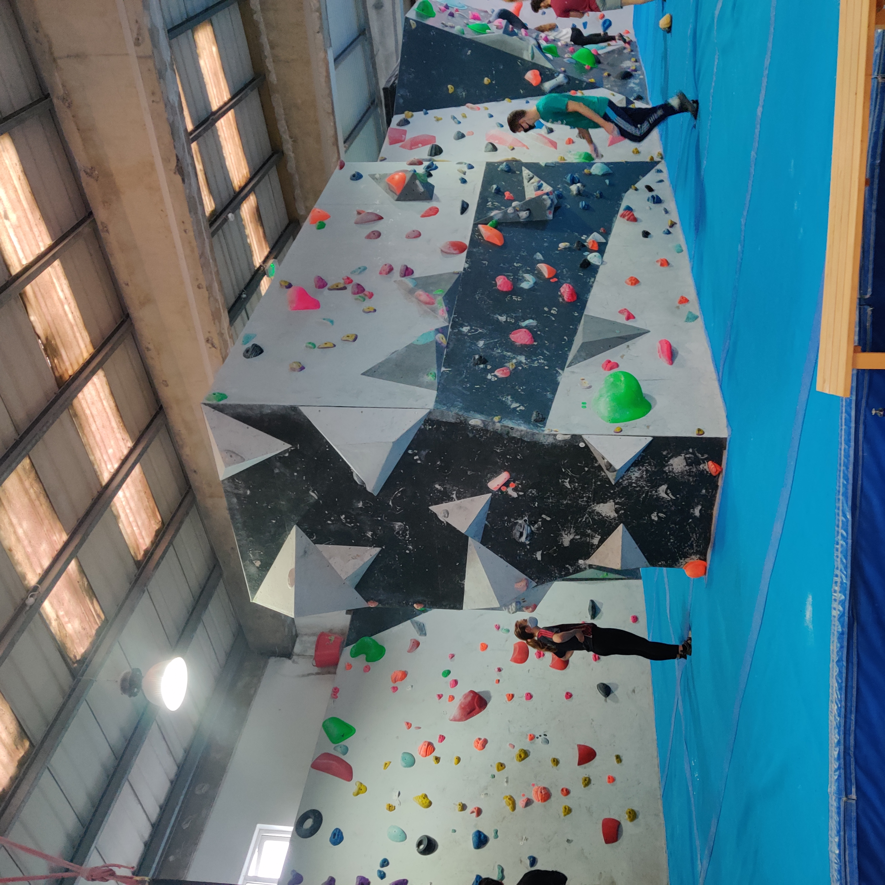
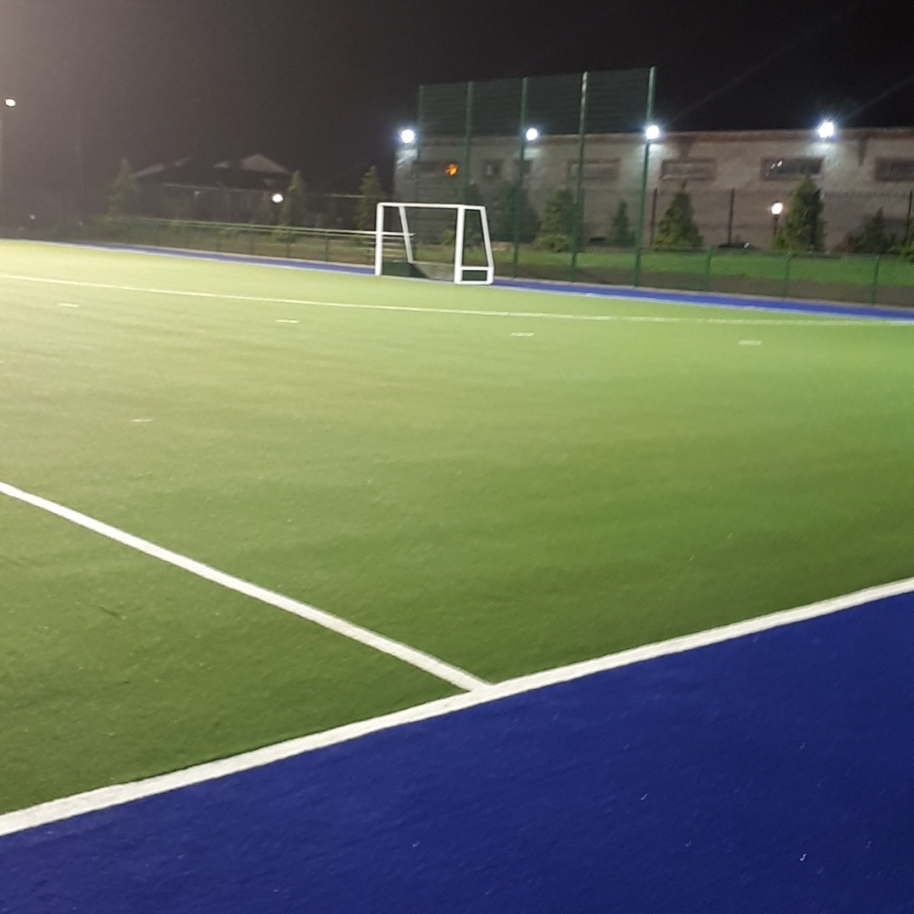
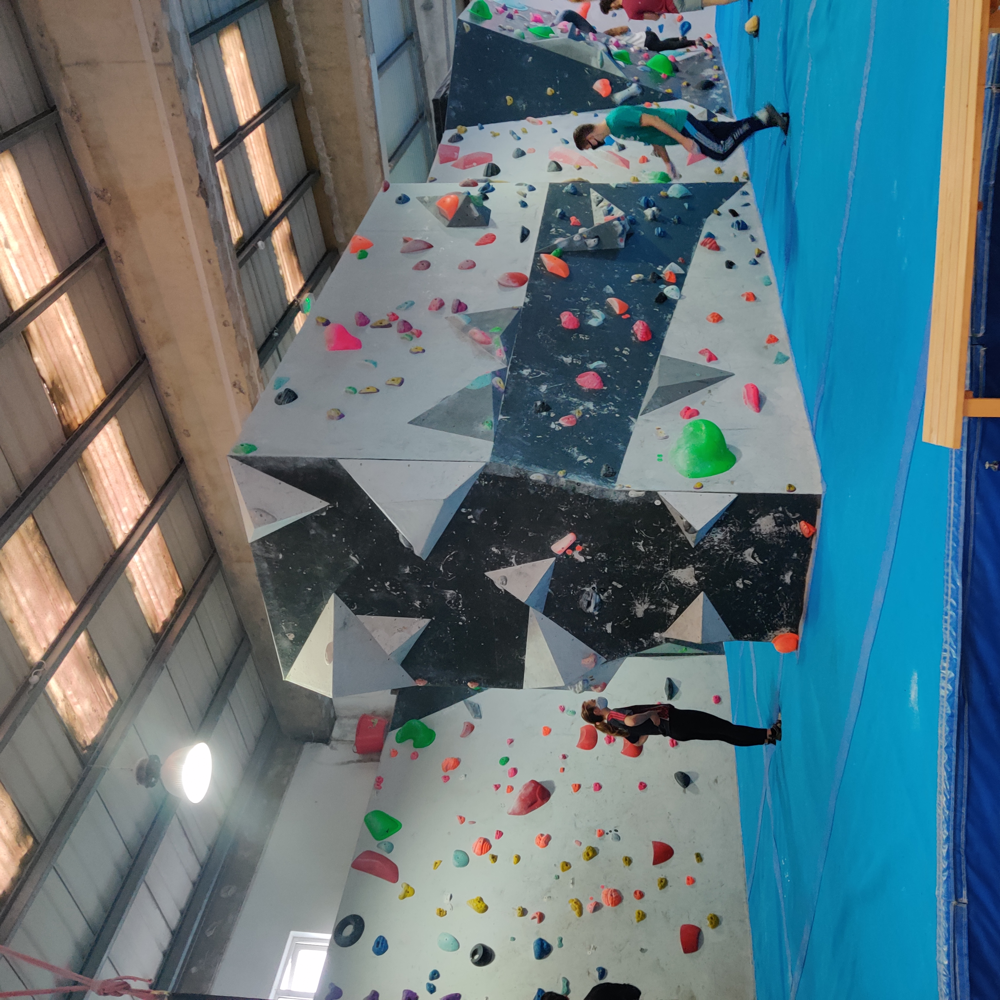

Personal Profile
Professional Summary

My name is Amy Delaney. I am currently working as a Manufacturing Process Technician based in Dublin, Ireland. I have four years experience in the Biopharmaceutical industry. I am a science graduate with a background in Biology and Statistics. I have upskilled my education with a Level 9 MSc in Pharmaceutical Business and Technology. I am a driven worker with excellent attention to detail. I have strong written and verbal communication skills.
Extracurricular Activities
When not in work I enjoy playing hockey, bouldering/climbing and snowboarding.

 

 


